Chapter 8
Clustering for model identification
So far the clusters were the result. In this chapter they are a means: a fuzzy cluster in the joint space of inputs and outputs is a region of the data in which one simple model holds, so every cluster can be turned into an if–then rule with a local linear model as consequent. We start from the Takagi–Sugeno fuzzy model and show how product-space clustering with Gath–Geva or Gustafson–Kessel prototypes yields its antecedents and consequents, why the projection of oblique clusters onto the input axes costs accuracy, and how the modified Gath–Geva algorithm avoids this by clustering with a prototype that is a rule and that carries over to multi-output dynamic systems. Three further algorithms exploit the cluster-as-model view: fuzzy c-regression models (clusters are hyperplanes), supervised fuzzy clustering (clusters are rules with class probabilities, and their projections give fuzzy partitions for decision trees), and the hinging-hyperplane regression tree, which grows a binary tree by clustering with two regression prototypes at every node; all of them are in fuzzyclust.models.
8.1 Problem and idea
A nonlinear function , , is rarely known in closed form, but it is often approximately linear in small regions. Operating regime based modeling builds a global model from local linear models , each valid in a region of the input space described by a validity function, and interpolates between them. When the regions are fuzzy sets, the model is the Takagi–Sugeno (TS) fuzzy model [94]
|
| (8.1) |
whose rules fire with the strength and whose output is the fuzzy mean
|
| (8.2) |
The model output is linear in the consequent parameters , which are therefore estimated by least squares once the antecedents are known. The bottleneck is the antecedent part, that is, the location and the width of the operating regions. Gradient-based neuro-fuzzy tuning and evolutionary search find them at a high computational price and tend to destroy the local meaning of the rules.
Fuzzy clustering in the product space of inputs and outputs offers a cheaper and more transparent solution [7, 95]. Collect every sample as and cluster the . Where the function is approximately linear, the samples lie close to a hyperplane; a cluster that adapts its shape (Gustafson–Kessel, Gath–Geva) becomes a flat ellipsoid stretched along that hyperplane. The hyperplane is the local linear model, and the extent of the cluster along the inputs is its operating region. Figure 8.1 shows the idea: three clusters along a curve, each projected onto the input axis to give a membership function and each carrying a line . The fuzzy partition matrix of the clustering then serves two purposes: it defines the antecedents and weights the least-squares problems of the consequents. The fuzziness also regularizes the local models, because neighboring rules share data.
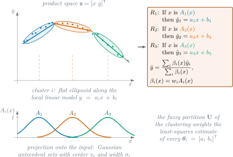
Two difficulties remain, and they motivate the algorithms of this chapter. First, a Gaussian cluster found by Gath–Geva clustering is an oblique ellipsoid in (the input block of its covariance matrix has off-diagonal elements), whereas rule (8.1) needs univariate sets ; projecting the ellipsoid onto the axes loses its orientation and introduces a decomposition error, which can be compensated only by re-estimating the consequents globally, at the price of their local meaning. The exact alternative, a linear transformation of the inputs (eigenvector projection), yields rules on transformed variables that are hard to interpret. The modified Gath–Geva algorithm of Abonyi, Babuška and Szeifert [96] resolves this by changing the prototype: a cluster is an axis-parallel Gaussian in the inputs together with a local linear model and the variance of its error, so the clusters are rules by construction. Second, point-like prototypes cannot cope with data in which the local laws cross each other; for such switching regression problems the prototype must be the hyperplane itself, which is the fuzzy c-regression model of Hathaway and Bezdek [97]. Both ideas, a prototype that includes a model and a distance that includes the class label or the output, recur in the supervised clustering of classifiers [98], in the supervised partitions for decision trees [99] and in the hinging-hyperplane trees [100].
8.2 Theory
Throughout the chapter collects the inputs (regressors) , the outputs (or for several outputs), the joint samples, the fuzzy partition (stored transposed in the code, as everywhere in fuzzyclust), the regressor matrix extended by a column of ones and the parameters of the local linear models. We first recall how TS models follow from Gath–Geva clusters and derive the modified algorithm (sections 8.2.1 and 8.2.2), extend it to multi-output dynamic systems (section 8.2.3), and then treat fuzzy c-regression (section 8.2.4), supervised clustering for classifiers and partitions (sections 8.2.5 and 8.2.6) and the hinging-hyperplane tree (section 8.2.7).
8.2.1 From Gath–Geva clusters to Takagi–Sugeno rules
Gath–Geva clustering (section 3.2.5) has a probabilistic interpretation [21, 96]. Let be the prior probability of cluster and its domain of influence; the algorithm identifies the mixture , with and the distance . Partition the prototype and the covariance into input and output blocks,
|
| (8.3) |
The regression function is the conditional expectation of the mixture, and because every component is Gaussian it is a weighted sum of linear functions,
|
| (8.4) |
This is exactly the TS model (8.2) with multivariate Gaussian antecedents and rule weights
|
| (8.5) |
the Gaussian mixture of regressors [101]. The consequents can be estimated in two ways [96, 102]:
-
Local weighted least squares: one problem per rule with the memberships as weights, ,
(8.6) which can also be read off the cluster, , , when the center and the covariance of the cluster are computed with the same weights (with the -weighted of Gath–Geva clustering the two estimates differ slightly). The local models are local linearizations of the function; they can be read and used one by one (the model is a lookup table of linearizations), but the overall prediction error is not minimal.
- Global least squares: all consequents in one problem with the normalized firing strengths as regressor weights, which minimizes the prediction error of (8.2) but lets the local models compensate each other where rules overlap, so that they lose their meaning.
A third estimate, total least squares, takes the hyperplane the cluster lies on: with the eigenvector of the smallest eigenvalue of , and . It is appropriate when the inputs are noisy, but it does not minimize the prediction error, and it fails when the inputs are locally collinear, because the eigenvector of the smallest eigenvalue then reflects the dependency among the inputs rather than the regression.
The antecedents of (8.4) are multivariate. For the conjunctive rule (8.1) they have to be decomposed into univariate sets, and this is where the difficulty lies (fig. 8.2). The product of the univariate Gaussians equals only if is diagonal. An oblique cluster can be projected onto the axes (), which widens its footprint and loses the orientation (the decomposition error), or the inputs can be rotated into the eigenvector basis of (the transformed input-domain approach [103]), which is exact but yields rules on linear combinations of the inputs.
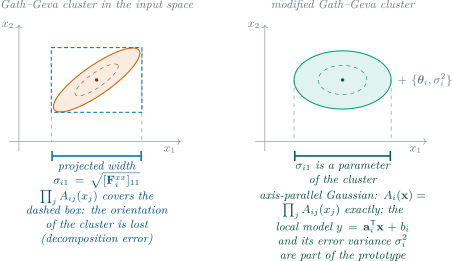
8.2.2 Modified Gath–Geva clustering
The modified algorithm [96] describes each cluster by an input distribution, a local model and an output distribution,
|
| (8.7) |
with the axis-parallel Gaussian input density and the Gaussian output error
The parameters of cluster are those of the TS rule (8.1) plus the two variances. The expectation-maximization (EM) algorithm for the mixture alternates the E-step, in which the posterior probability of every sample is computed by Bayes’ rule, and the M-step, in which the parameters are re-estimated with these posteriors as weights: the priors , the centers and variances as weighted means, the local models by weighted least squares (8.6) with the posteriors on the diagonal of , and the error variances as weighted mean squared residuals. Written as a fuzzy clustering algorithm with the memberships in the role of the posteriors and the distance
|
| (8.10) |
the algorithm takes the form of Gath–Geva clustering with the functional . For the membership update is the E-step, , and because the parameters are re-estimated with the weights rather than , as in the M-step above, the alternating optimization is the EM algorithm: it increases the likelihood of the mixture and does not, strictly, minimize . The first factor of (8.10) measures how far the input is from the cluster center in units of the cluster widths, the second how well the local model predicts the output; a sample belongs to a cluster if its input lies in the cluster and the local model fits its output. The rule weights of the resulting TS model are , and the firing strengths , once normalized, are the posteriors given the input alone, which is what prediction needs. fuzzyclust evaluates all densities in the log domain.
With the exponential distance, the algorithm converges fast to a
nearby local optimum and can shrink a cluster onto a few samples (a tiny
makes
huge). fuzzyclust therefore offers the variance regularization
, the diagonal
analog of the covariance regularization of section 3.2.4, a variance floor, and random restarts.
Because
is not comparable between restarts of an exponential-distance algorithm, the
restart is selected (restart_criterion) either by the mixture log-likelihood
, the
EM criterion, or by the training error of the TS model. The two can disagree,
because a rule with a small error variance on part of the data raises the
likelihood without improving the global fit.
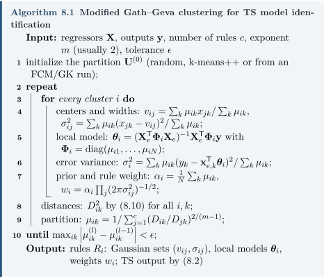
In a nutshell: Modified Gath–Geva clustering
- A cluster is a TS rule: axis-parallel Gaussian antecedent sets, a local linear model, its error variance and a prior; the distance is the inverse joint density of input and output.
- For the alternating optimization is the EM algorithm for a mixture of local linear regressions; the memberships are posterior probabilities.
- No projection, no decomposition error, rules on the original variables; the local models are local linearizations (weighted least squares), and a global re-estimation trades interpretability for accuracy.
- Sensitive to initialization like all exponential-distance algorithms: use restarts, the variance regularization and a sensible number of rules.
8.2.3 Multi-output dynamic systems
A nonlinear dynamic process is identified in the same framework by choosing lagged outputs and inputs as regressors. For a process with outputs and inputs, the regression vector of the nonlinear ARX (NARX) model is
|
| (8.11) |
and the rule consequents are local linear MIMO ARX models with a parameter matrix that has columns [104, 105]. The antecedent acts on a scheduling vector , a subset of that determines the operating point (typically a few lagged outputs). Only the output density changes in (8.10): the scalar error variance becomes the weighted error covariance matrix
and the local models are estimated column by column with the same weights (8.6). With local estimation, the model is a linear parameter-varying (LPV) system: at the operating point its matrices are the sums of the local matrices weighted by the normalized firing strengths, , which is the interpretation model-based control needs [106]. A single rule base replaces MISO models and shows the cross-couplings explicitly.
Dynamic models must be validated in free run (parallel simulation): the model is driven by the measured inputs only, and its own past outputs are fed back as regressors, . Errors can accumulate, so a model that predicts one step ahead well may still drift; the free-run error is the relevant measure when the model is used for simulation or control.
8.2.4 Fuzzy c-regression models
In switching regression the data are generated by unknown linear laws that share the input range and may cross each other. A point prototype with a fixed norm cannot separate such data, and an adaptive norm (Gustafson–Kessel) describes each law only indirectly, by an elongated ellipsoid, so Hathaway and Bezdek [97] let the prototype be the regression model itself and measure the distance of a sample by its squared residual,
|
| (8.14) |
Any error measure that keeps the minimizer property of the c-means functional may replace the squared residual. For models linear in the parameters, the minimizing for fixed is the weighted least-squares estimate (8.6) with , and the minimizing for fixed models is the FCM update with in place of ; the alternating optimization is a grouped coordinate descent and converges to a local minimum or saddle point, so random restarts are advisable. The memberships of a sample depend on the output, so they exist only for input–output pairs; for a new input the model can return the outputs of all local models but cannot say which one applies. Prediction from the input alone needs an input-space partition, as in a TS model, or the hinging-hyperplane construction of section 8.2.7; both can be built on FCRM.
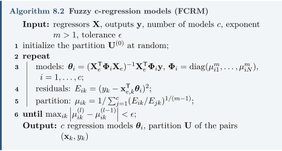
In a nutshell: Fuzzy c-regression models
- Prototypes are regression models; the distance of a sample is its squared residual, so crossing linear laws are separated.
- Alternating weighted least squares and FCM membership update; the functional has local minima, so use restarts.
- Memberships are defined for input–output pairs only; a new input yields the candidate outputs, not a single prediction.
- Building block of the hinging-hyperplane tree and a diagnostic tool for switching behavior in data.
8.2.5 Supervised fuzzy clustering for fuzzy classifiers
A fuzzy rule-based classifier with one rule per class and a crisp class as consequent can represent only classes that are single compact regions. Abonyi and Szeifert [98] generalize the consequent to a vector of class probabilities,
|
| (8.15) |
so that rules, possibly more than the classes, describe the data, and a class may be covered by several rules. The rules are aggregated with the normalized firing strengths, and the class with the largest posterior is chosen,
|
| (8.16) |
With Gaussian antecedents and the weights this is the Bayes decision rule of a classifier whose class-conditional densities are mixtures of (axis-parallel) Gaussians, an extension of the quadratic Bayes classifier, so the rule base inherits its probabilistic interpretation.
Unsupervised clustering estimates the density of the inputs without looking at the labels and therefore places clusters that ignore the class boundaries. The supervised algorithm includes the label in the sample, , and in the distance: the inverse Gath–Geva distance of the input is multiplied by the probability that the rule describes the class of the sample,
|
| (8.17) |
(The paper writes this distance without the normalizing constants of the Gaussians; with
them is the joint
probability , consistent
with the weights
of the classifier. fuzzyclust implements both forms, selected by
normalize_density.) The updates follow from the Lagrangian of
as for Gath–Geva clustering: centers and variances are
-weighted
means, the class probabilities are the membership mass of each class in the rule,
, and
. A
sample is thus attracted by a rule when it lies in the rule’s region and the
rule’s consequent favors its class; the clustering pulls the rules apart
along class boundaries that pass through a dense region of the input
space.
Feature selection follows the same probabilistic view. With the within-rule and between-rule scatter matrices
|
| (8.18) |
the Fisher interclass separability measures how well separated and how compact the rules are. The importance of a feature is the value of computed without it; the feature whose removal lowers least is deleted, the classifier is re-identified on the reduced data, and the procedure stops when the accuracy starts to drop. (Since has rank at most , fuzzyclust uses the product of its largest eigenvalues in place of a vanishing determinant, which keeps the values comparable between feature subsets of equal size; the trace criterion is available as well.)
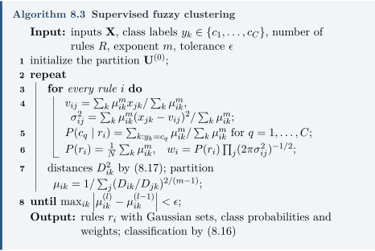
In a nutshell: Supervised fuzzy clustering
- Rules carry a probability for every class, so the number of rules is free and classes made of several groups are handled; the classifier is a Gaussian-mixture Bayes classifier.
- The class label enters the distance; the clustering is the supervised counterpart of Gath–Geva clustering and identifies the classifier in one pass.
- Choose by cross-validation, regularize the variances for large , and prune the features with the interclass separability criterion.
- The projections of the rules onto the features provide the supervised fuzzy partitions of section 8.2.6.
8.2.6 Supervised fuzzy partitions for decision-tree induction
Decision-tree and rule-induction methods of the ID3 family [107] operate on discrete attributes, so continuous features are partitioned a priori and the partition fixes what the tree can express. Fuzzy sets make the partition soft and the tree a fuzzy decision tree [108], but the common a priori partitions (equal-width bins, equal-frequency bins or a Ruspini partition of triangles [1]) ignore the class labels; Dougherty, Kohavi and Sahami [109] survey these unsupervised discretizations and their supervised counterparts. An unsupervised clustering of each feature ignores the labels as well: like equal-frequency binning, it adapts the sets to the density of the samples rather than to the class boundaries. Abonyi [99] derives the partition from the supervised clustering of section 8.2.5 in four steps (fig. 8.3):
- 1.
- Supervised clustering with rules; every rule projected onto feature gives a Gaussian set , so each feature starts with sets whose positions follow the class structure.
- 2.
- Trapezoids: since the tree learner needs triangular or trapezoidal sets,
every Gaussian is replaced by the trapezoid with the corner points
(8.19) - 3.
- Merging (pre-pruning): sets of the same feature that overlap strongly are
merged on the basis of the similarity measure of Setnes et al. [42],
(8.20) the ratio of the cardinalities of the intersection () and the union () of the two membership functions; pairs with (the paper uses ) are merged, most similar first, into a set whose center and width are the prior-weighted combination of the two. A feature left with a single set carries no information about the classes and is a don’t care variable that can be dropped.
- 4.
- Tree induction and post-pruning: the sets are the a priori partition of the tree learner (the fuzzy ID3 variant FID in the paper); the leaves of the resulting tree store the class frequencies and are read as rules of the form (8.15), and rules with a prior below a cut level are removed.
The cut points of the partition therefore sit where the classes change, and the tree is small because every attribute test is informative.
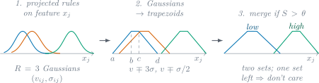
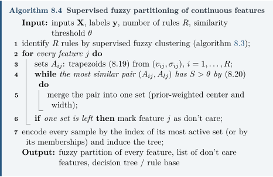
In a nutshell: Supervised fuzzy partitions
- A priori discretization whose cut points come from a supervised clustering and therefore sit where the classes change.
- Gaussian sets become trapezoids; similar sets are merged; features with one set are discarded.
- Gives small trees with linguistically meaningful tests; a tree that optimizes its own thresholds (CART) may still be more accurate on axis-parallel problems.
- Parameters: initial number of sets (3–5) and the merging threshold .
8.2.7 Hinging-hyperplane regression trees
A hinging hyperplane [110] is the continuous piecewise-linear function of two hyperplanes joined along their intersection,
|
| (8.21) |
and sums of hinge functions approximate smooth functions arbitrarily well. Finding one hinge is a nonsmooth least-squares problem with local minima, for which Breiman’s iterative algorithm has convergence and range problems. Kenesei and Abonyi [100] observed that fuzzy c-regression with (section 8.2.4) identifies two linear models and their fuzzy operating regions at once, which is a hinge if the two planes cross inside the data (fig. 8.4, top). With as the weighted center of the regressors of cluster , the crossing is enforced by the relative constraint
|
| (8.22) |
that is, the two cluster centers lie on opposite sides of the hinge. When the unconstrained weighted least-squares solution violates it, the two models are re-estimated jointly by a quadratic program with the linear constraints (8.22) (fuzzyclust solves it with SLSQP for both sign patterns and keeps the better one); local or global constraints on the parameters can be added in the same way. The hinge type ( or ) is the one with the smaller squared error on the node data.
A single hinge is a coarse model, and a sum of hinges fitted to all data is hard to interpret. The paper therefore builds a binary tree: the hinge of the root splits the data into the two operating regions (the samples where plane 1 is active go to the left child), each region is modeled by a hinge again, and so on, until a stopping rule holds: the depth limit is reached, a child would be too small for a two-plane fit, the error does not decrease ( of the parent), or the node error is below a tolerance. The tree is grown either balanced (every branch to the same depth) or greedy (the leaf with the largest error is split next, until a budget of leaves is spent). Internal nodes split along oblique hinges, so no splitting variable has to be chosen, and the leaves are hinge functions (or single planes). The whole model is therefore piecewise linear, with a transparent structure that can be used directly for instantaneous linearization in predictive control. Each node reports its RMSE and the condition
|
| (8.23) |
where is the number of samples the crisp hinge sends to the side of plane 1 and the membership mass of model 1. A value of close to one means that the hinge does not override the fuzzy partition found by FCRM, that is, the hinge identification at that node is reliable.
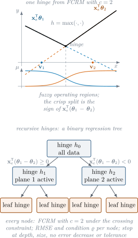
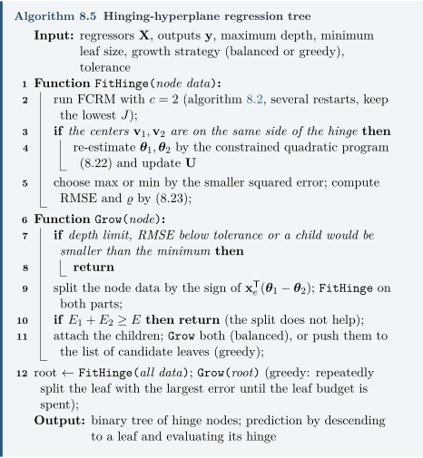
In a nutshell: Hinging-hyperplane regression tree
- FCRM with two models identifies a hinge; the crossing constraint keeps the hinge inside the data.
- Recursive hinge identification grows a binary tree with oblique splits (no splitting variable) and piecewise-linear leaves.
- Complexity is controlled by the depth, the leaf size and the leaf budget of greedy growth; the node RMSE and the condition guide the construction.
- The local linear models of the leaves make the model directly usable for linearization-based predictive control.
8.3 Using it in fuzzyclust
The estimators of this chapter are in fuzzyclust.models. All of them are supervised in the scikit-learn sense: fit(X, y) takes the regressors and the outputs (or the class labels), the clusterers inherit the alternating-optimization loop of chapter 2, and the regressors and the classifier follow the RegressorMixin / ClassifierMixin conventions (score is or the accuracy). Regression matrices of dynamic systems are built with fuzzyclust.preprocessing.make_regressors.
fuzzyclust.models.TakagiSugeno
n_clusters=3, m=2.0, antecedent="gaussian_axis_parallel"|
"gg_projected"|"gk_projected", consequent="local"|"global"|"tls",
antecedent_features=None, gamma=0.0, beta=1e15, tol, max_iter,
init="kmeans++", n_init=1, restart_criterion="likelihood"|"error",
random_state, verbose.
fit(X, y) with y of shape (N,) or (N, n_outputs); predict(X) is the
TS output (8.2); firing_strengths(X), antecedent_membership(X),
local_predict(X); rule_base() (DataFrame) and describe() (text).
Attributes centers_, sigmas_, rule_weights_, local_models_ (c, n+1,
n_outputs), coef_, intercept_, membership_, clusterer_ (the engine).
antecedent_features selects the scheduling variables; the consequents always
use all regressors.
fuzzyclust.models.ModifiedGG
A BaseFuzzyClusterer, the clustering engine of the default TakagiSugeno, with fit(X, y), the parameters of TakagiSugeno without antecedent, consequent and beta, plus var_floor=1e-6 (and n_init=3 by default), and the fitted rule parameters cluster_centers_, input_variances_, local_models_, error_covariances_, priors_, rule_weights_, log_likelihood_, restart_scores_. predict(X) returns the TS output, predict_proba(X[, y]) the memberships (posteriors given the input, or given input and output), transform(X[, y]) the distances, describe_rules() the rule table.
fuzzyclust.models.simulate_free_run(model, u, y_init, n_a, n_b=0, n_k=1)
Free-run simulation of any regressor trained on the regressors of make_regressors: the predicted outputs are fed back while the measured inputs u (None for autonomous models) drive the model, and y_init supplies the initial outputs up to the largest lag. Works for single- and multi-output models.
fuzzyclust.models.FuzzyCRegression
n_clusters=2, m=2.0, fit_intercept=True, tol, max_iter, init="random"|
"kmeans++"|array, n_init=1, random_state, verbose.
fit(X, y); coef_, intercept_, local_models_, membership_, labels_.
predict(X) returns the outputs of all local models (N, c); predict_proba(X,
y), predict_labels(X, y) and transform(X, y) (absolute residuals) need the
pairs.
fuzzyclust.models.SupervisedFuzzyClassifier
n_clusters=3, m=2.0, gamma=0.0, var_floor=1e-6, normalize_density=True,
tol, max_iter, init="kmeans++", n_init=3, random_state, verbose.
A classifier: predict_proba(X) are class posteriors (8.16), predict(X) the
labels, cluster_membership(X[, y]) the rule memberships; classes_,
cluster_centers_, input_variances_, class_probs_ (R, C), priors_,
rule_weights_; rule_base(), interclass_separability(features, criterion),
feature_importance(). The function select_features_by_separability(X,
y, n_features_to_select, **params) runs the backward elimination and
returns the kept features, the elimination order and a history of separability and
accuracy.
fuzzyclust.models.FuzzyPartitionDiscretizer
n_sets=3, shape="trapezoid"|"gaussian"|"triangle", merge_threshold=0.8,
encode="crisp"|"membership", method="supervised"|"ruspini",
drop_single=False, m, tol, max_iter, init, random_state.
A transformer: fit(X, y), transform(X) returns one set index per
feature (floats, like KBinsDiscretizer) or the memberships in all sets;
partitions_ (centers, widths, merged rule groups per feature), n_sets_,
active_features_, classifier_; membership(X), evaluate(feature, grid),
get_feature_names_out(). The functions supervised_fuzzy_partition,
ruspini_partition, membership_1d and set_similarity expose the building
blocks.
fuzzyclust.models.HingingHyperplaneTree
max_depth=3, min_samples_leaf=10, growth="balanced"|"greedy",
max_leaves=None, tol_rmse=0.0, leaf_model="hinge"|"linear",
constrain_hinge=True, m=2.0, n_init=3, fcrm_max_iter=100, fcrm_tol=1e-4,
random_state.
A regressor: predict(X), apply(X) (leaf index), tree_ (root HingeNode with
theta, kind, rmse, condition, children), leaves_, n_leaves_, depth_;
node_table() and describe().
data generators and plot helpers
make_sinc, make_second_order_plant (the benchmark plant, random or sinusoidal excitation), make_mimo_plant, make_switching_lines, make_two_class_overlap, make_banded_classes, make_piecewise_linear; plot_membership_functions(model, X), plot_local_models(model, X, y), plot_decision_regions(clf, X, y, proba_class), plot_fuzzy_partition(disc, feature, X, y), plot_hinge_tree_surface(tree, X).
A TS model of a static function is identified and inspected in three lines:
ts = TakagiSugeno(n_clusters=4, random_state=0).fit(X, y) print(ts.describe(digits=3)) print(f"R^2 on noise-free test data: {ts.score(X_test, y_test):.3f}")
For a dynamic system, the regressors are built first and the model is validated in free run:
u_id, y_id = make_second_order_plant(n_samples=200, excitation="random", random_state=0) u_val, y_val = make_second_order_plant(n_samples=200, excitation="sine", random_state=1) def nonlinear_part(u, y): Phi, target, names = make_regressors(y, n_a=2) # rows [y(k-1), y(k-2)], k = 2, ..., N-1 return Phi, target - u[2:], names X_id, f_id, names = nonlinear_part(u_id, y_id) X_val, f_val, _ = nonlinear_part(u_val, y_val) print("regressors:", names)
ts = TakagiSugeno(n_clusters=4, n_init=5, restart_criterion="error", random_state=0).fit(X_id, f_id) y_pred = ts.predict(X_val) + u_val[2:] # one-step-ahead prediction of y(k) y_sim = free_run(ts, u_val, y_val[:2]) # free-run simulation
A MIMO model schedules on the lagged outputs and is simulated with simulate_free_run:
ts = TakagiSugeno(n_clusters=3, antecedent_features=[0, 1], n_init=5, restart_criterion="error", random_state=0).fit(Phi_id, Y_id) print(ts.rule_base(feature_names=names, output_names=["y1", "y2"]).round(3).to_string(index=False)) y_sim = simulate_free_run(ts, u_val, y_val[:1], n_a=1, n_b=1, n_k=1)
Switching regression, the fuzzy classifier and the hinge tree follow the same pattern:
fcm = FCM(n_clusters=2, random_state=0).fit(Z) gk = GK(n_clusters=2, random_state=0).fit(Z) fcrm = FuzzyCRegression(n_clusters=2, n_init=5, random_state=0).fit(X, y) print("slopes :", fcrm.coef_[:, 0].round(3)) print("intercepts:", fcrm.intercept_.round(3))
clf2 = SupervisedFuzzyClassifier(n_clusters=2, random_state=0).fit(X, y) clf4 = SupervisedFuzzyClassifier(n_clusters=4, random_state=0).fit(X, y) print(f"training accuracy: 2 rules {clf2.score(X, y):.3f}, 4 rules {clf4.score(X, y):.3f}") print(clf4.rule_base().round(3).to_string(index=False))
tree = HingingHyperplaneTree(max_depth=2, min_samples_leaf=10, random_state=0).fit(X, y) print(tree.describe(feature_names=["x1", "x2"], digits=3)) print(tree.node_table().round(3).to_string(index=False)) print(f"test RMSE: {np.sqrt(np.mean((tree.predict(X_test) - y_test) ** 2)):.4f}")
and the supervised partition is a transformer in a scikit-learn pipeline:
pipe = make_pipeline( FuzzyPartitionDiscretizer(n_sets=3, drop_single=True, random_state=0), DecisionTreeClassifier(max_depth=2, random_state=0), ).fit(X, y) codes_names = list(pipe[0].get_feature_names_out(feature_names)) print(export_text(pipe[-1], feature_names=codes_names))
8.4 Examples
8.4.1 Takagi–Sugeno model of the sinc function
Three hundred noisy samples of on are modeled with four rules (fig. 8.5). The local linear models (colored) are the linear laws of the clusters, drawn thick where the rule fires; the black curve is the TS output, a smooth interpolation whose weights are the shaded firing strengths, and the Gaussian sets below are the clusters themselves (nothing has been projected). Figure 8.6 compares the three antecedent constructions with four rules each: the modified GG model is the most accurate ( on noise-free test data), the projected GK model follows, and the projected GG model, whose clusters have free volumes and lean most strongly along the local slopes, loses the central peak (), which makes the decomposition error visible. Figure 8.7 shows two of them in the product space: GK clusters are oblique ellipses in the plane, modified GG clusters are Gaussians in with a line inside. The consequent estimators differ as predicted: global least squares reaches the smallest RMSE ( against ), but its slopes no longer match the local slopes of the sinc. Finally, fig. 8.8 scans the number of rules. Both errors fall from with two rules to with six, though not monotonically: the five-rule model is worse than the four-rule one (training RMSE against ), because the clustering, not the prediction error, places the rules. From six rules on, the training error approaches the noise level of , and the error on the noise-free test data keeps falling, to with twelve rules, so up to twelve rules the model does not yet fit the noise.
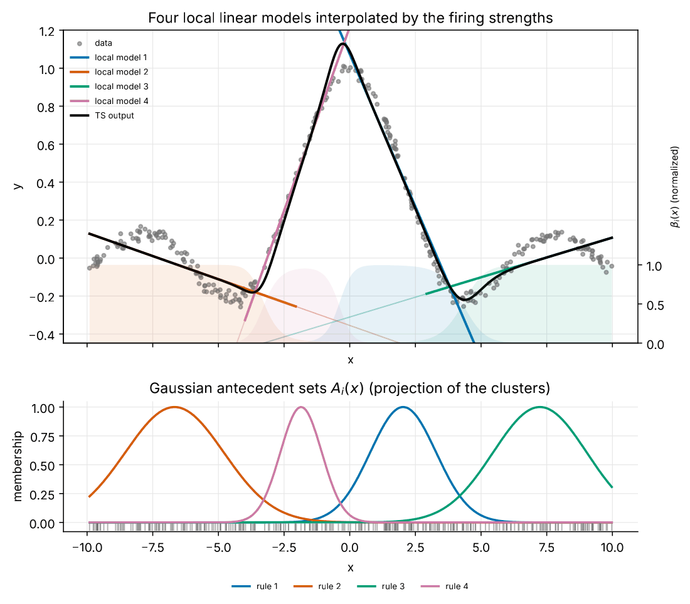
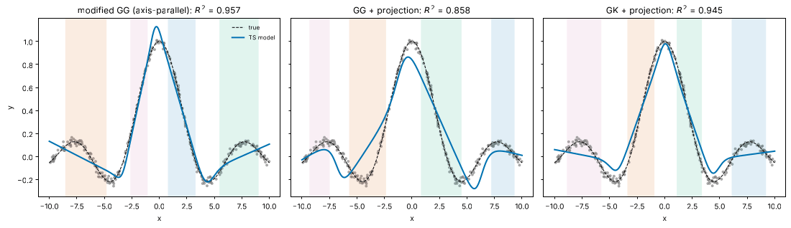
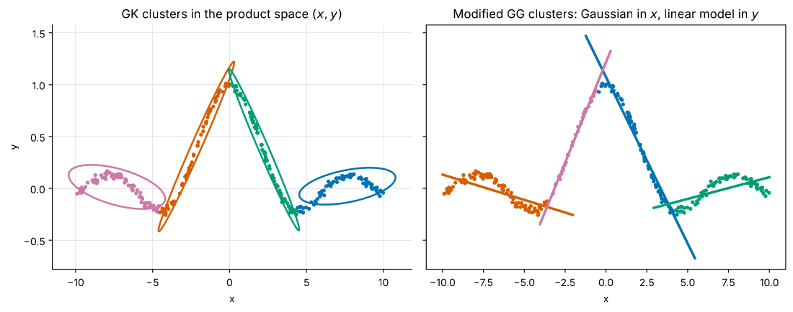
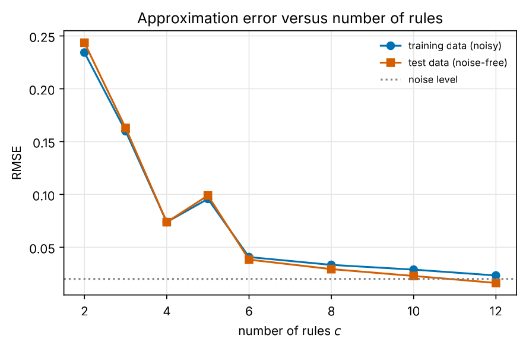
8.4.2 Nonlinear dynamic plant with free-run validation
The second-order plant of [96] is identified from 200 samples with a random input and validated on 200 samples with a sinusoid (fig. 8.9). The TS model approximates the nonlinear component with four rules; fed with its own outputs, it reproduces the validation output of an excitation it has never seen (fig. 8.10, free-run MSE against for one-step prediction). The antecedent sets on the two lagged outputs (fig. 8.11) and the identified surface (fig. 8.12) show the operating regimes: the model matches where there are data and extrapolates linearly outside, and the input space is tiled by the four rules. The scan in fig. 8.13 repeats the paper’s experiment over the number of rules and compares the two restart criteria: the training error decreases monotonically, the free-run error on the sinusoid no longer decreases systematically beyond three rules (it fluctuates between and up to eight rules) and grows tenfold for twelve rules (the sinusoid visits parts of the state space the random excitation has barely covered), and selecting the restart by the TS training error avoids the poor two-rule solution that the likelihood criterion picks.
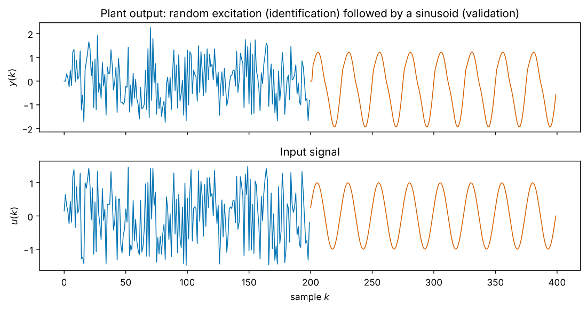
Open in ColabExample plot_02_ts_dynamic_plant.py in the gallery
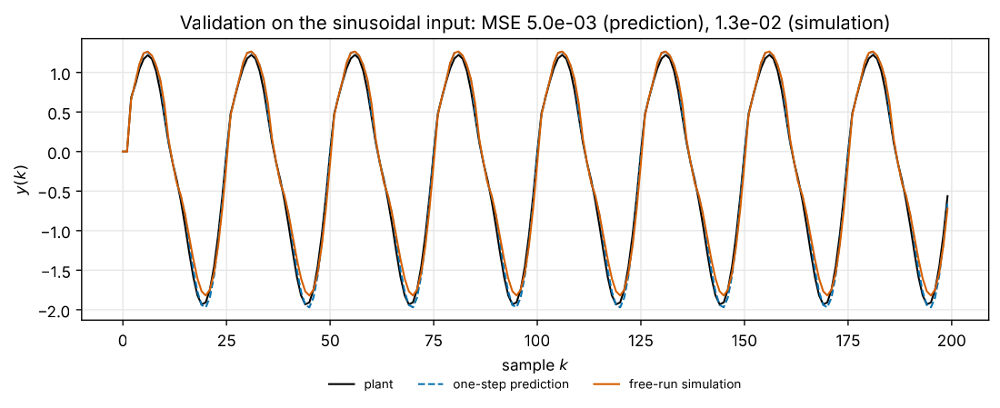
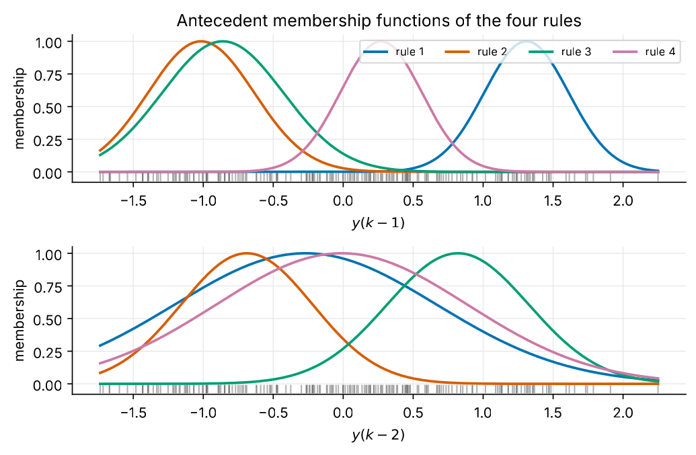
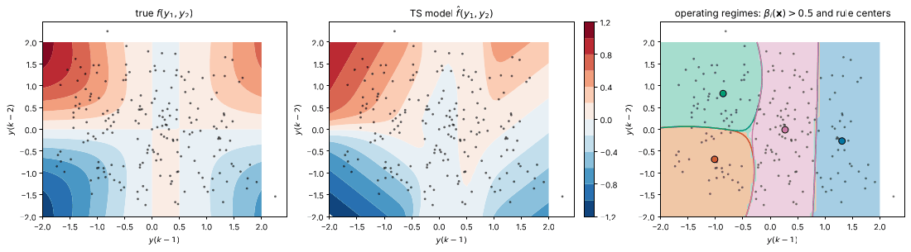
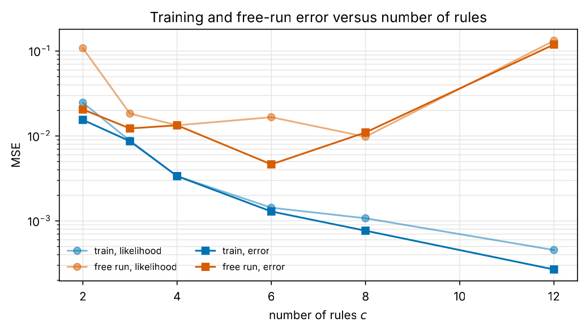
8.4.3 MIMO model of a two-input two-output process
A process with two coupled states and operating-point-dependent input gains is identified with three rules whose antecedents act on the lagged outputs. Figure 8.14 shows the free-run simulation of both outputs on a validation sequence of random steps (RMSE and ); because the two outputs are fed back jointly, the cross-couplings are represented inside every local MIMO model. The antecedent sets (fig. 8.15) divide the operating range of the outputs into three regimes, and the local input gains, compared with the true gains at the rule centers, give the LPV interpretation. The rule at large outputs matches them closely ( and against and ); the central rule has the largest gain, as it should, but the membership-weighted fit over a wide region flattens the gains of the two rules near the origin ( and against and ). Figure 8.16 scans the number of rules for three choices of the scheduling vector: one rule is the linear MIMO ARX model, and adding rules lowers the free-run error on the whole, though not at every step (with scheduling on the outputs, from for one rule to for six, with three and four rules equally good); scheduling on the outputs (or on all regressors) works, whereas scheduling on the inputs brings little because the inputs do not define the operating point of this process.
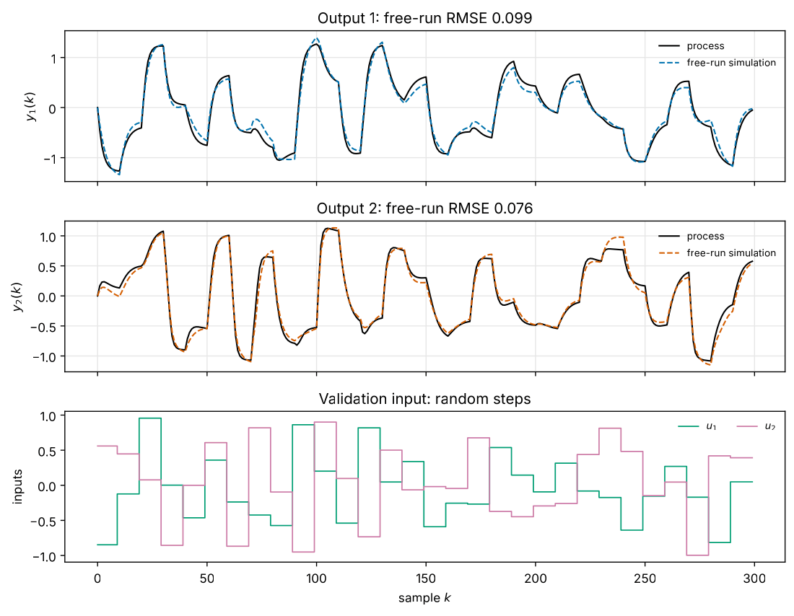
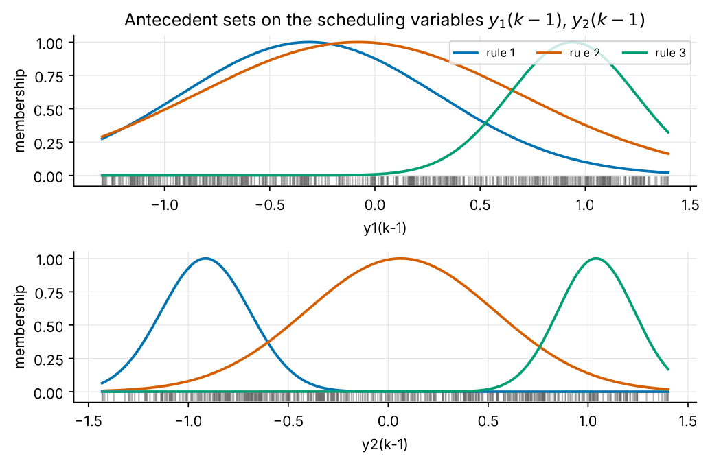
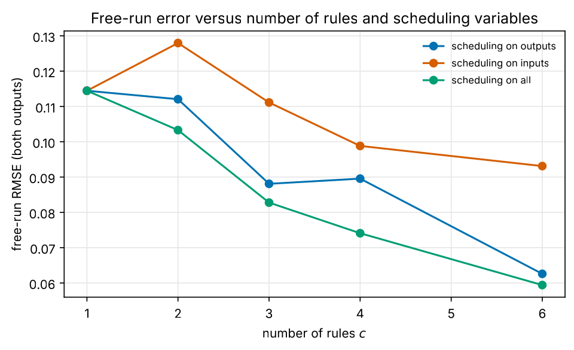
8.4.4 Switching regression with fuzzy c-regression models
Three hundred samples of two crossing lines are clustered in fig. 8.17. FCM splits the plane into halves (ARI ). GK finds two elongated ellipsoids that follow the lines and labels the points as well as FCRM does (ARI for both, the same three points at the crossing being mislabeled), but it describes the laws only by ellipsoids. FCRM recovers the slopes and intercepts to within and assigns every point to the line with the smaller residual. The memberships (fig. 8.18) are fuzzy only around the crossing, and the objective decreases monotonically over eleven iterations. With three lines, two of them parallel, the functional has several minima (fig. 8.19): of twelve runs from random partitions, six reach and the correct lines, and the other six end in solutions with (four runs) or (two runs) in which one model averages the parallel lines. With n_init restarts, the run with the lowest is the right one. The exponent (fig. 8.20) changes the crispness of the partition but hardly changes the lines: the weighted least-squares fits are insensitive to as long as the residual ratios are sharp.
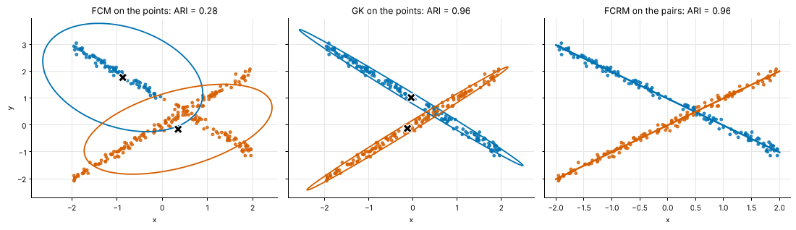
Open in ColabExample plot_04_fcrm_switching.py in the gallery
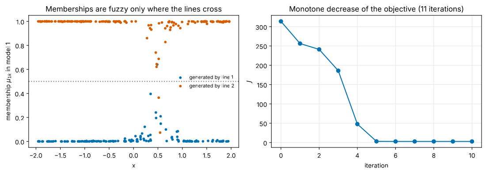
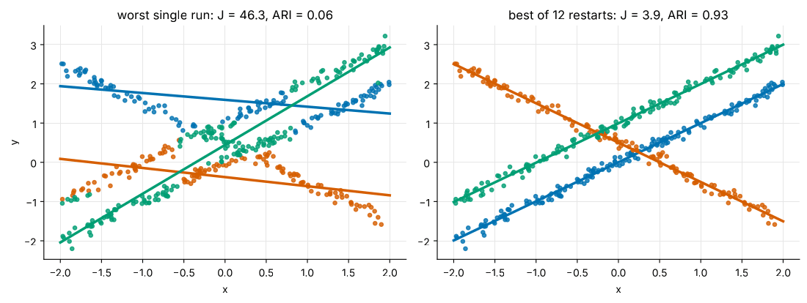
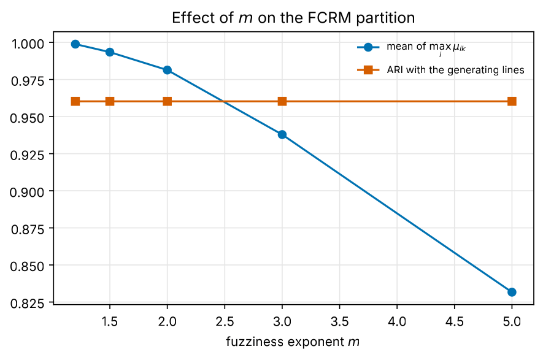
8.4.5 Fuzzy classifier from supervised clustering
Each of two classes consists of two Gaussian blobs in an XOR layout. With two rules, the clustering can only place one rule on a blob and one broad rule in the middle whose consequent mixes the classes, and the accuracy is ; with four rules, every blob gets a nearly pure rule, and the decision regions show the XOR pattern (fig. 8.21, accuracy ). The posterior of class 1 (fig. 8.22) is smooth between the rules, and the antecedent sets come in pairs on each feature (fig. 8.23). Cross-validation over the number of rules (fig. 8.24) confirms that four rules are needed and that the variance regularization keeps the accuracy at for twelve rules, where the unregularized rules start to shrink onto subsets. On the wine data (fig. 8.25), three rules on all thirteen attributes classify of the wines; the backward elimination by interclass separability removes magnesium, alcalinity of ash, malic acid and color intensity first and keeps – accuracy down to four attributes (alcohol, flavanoids, nonflavanoid phenols and hue, ); with three attributes the accuracy drops to .
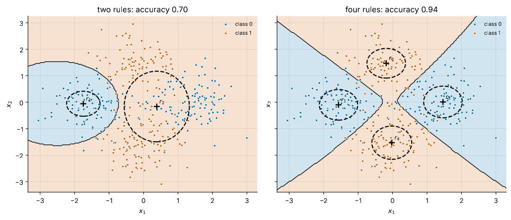
Open in ColabExample plot_05_supervised_classifier.py in the gallery
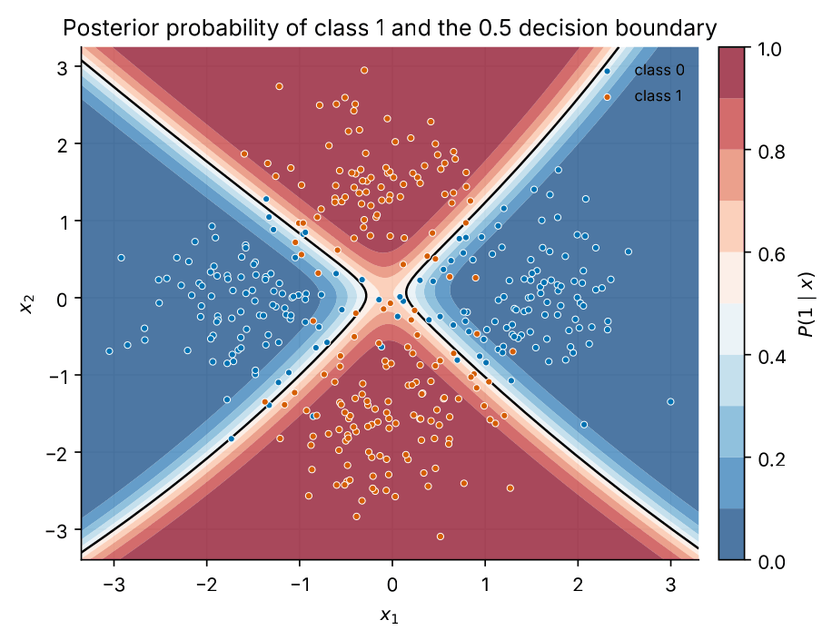
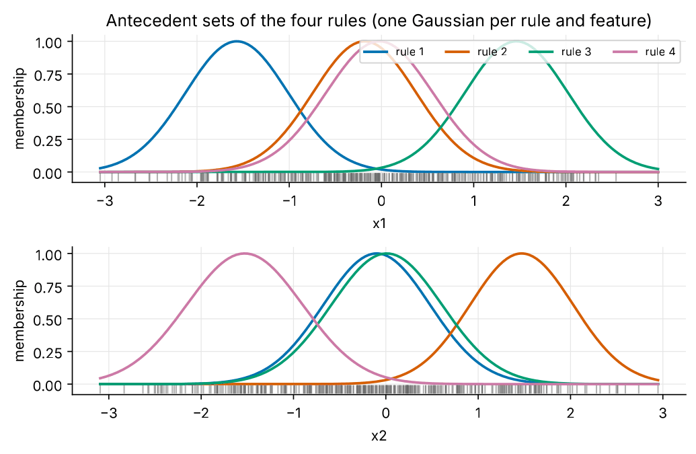
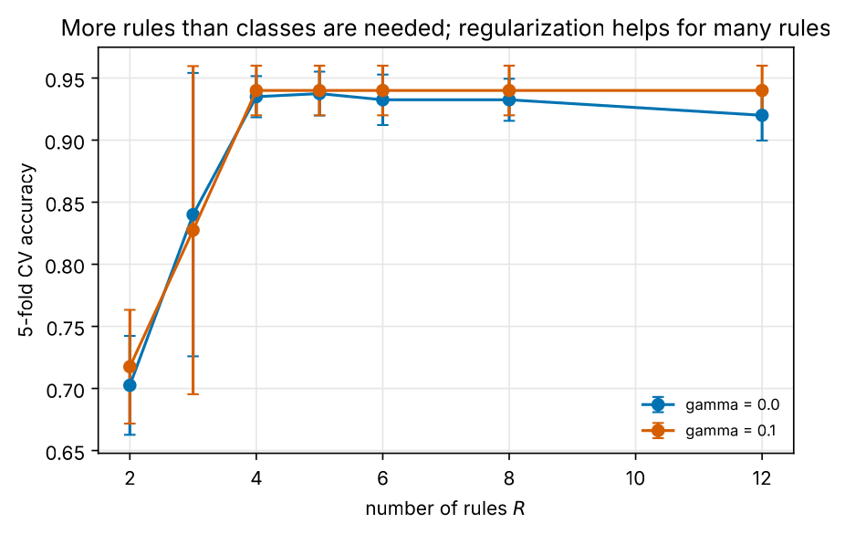
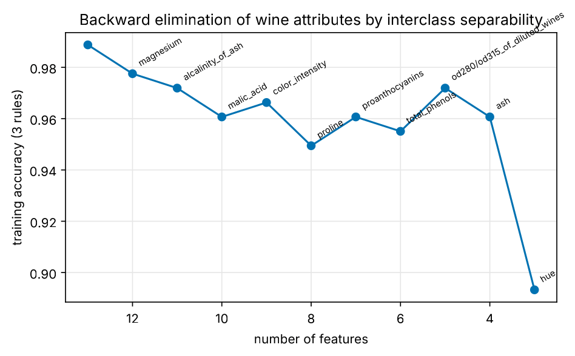
8.4.6 Supervised fuzzy partitions and decision trees
Three classes are separated by thresholds on two features; a third feature is noise. The supervised partition (fig. 8.26, top) merges two of the three sets on (the rules of classes 1 and 2 coincide there), keeps three sets on with the transitions between the classes, and merges all sets of the noise feature into one, which marks it as a don’t care variable; the Ruspini partition (bottom) places its sets at equal distances regardless of the classes. A decision tree of depth two on the crisp codes reads as three rules on linguistic terms. In cross-validation, unrestricted trees on the supervised codes reach accuracy with five leaves, whereas equal-width, equal-frequency and Ruspini partitions need about fifteen leaves for , and ; the membership encoding reaches , and a tree on the raw features is perfect because the boundaries are axis-parallel thresholds that CART finds exactly. On iris (fig. 8.27) the supervised sets of the petal length switch between the species, and trees of depth three on the a priori partitions reach – accuracy against for the raw tree: equal-width bins () and the supervised codes () do slightly better, equal-frequency bins, the Ruspini sets and the membership encoding (–) slightly worse, so on these well-separated species the benefit of the supervised sets is their meaning rather than accuracy. The scan in fig. 8.28 shows that three to five initial sets suffice, that two are too few, and that merging at removes a fifth to a third of the sets in this range (six instead of nine for three initial sets) without loss of accuracy, whereas keeps every set and grows larger trees (nine leaves instead of five for three initial sets).
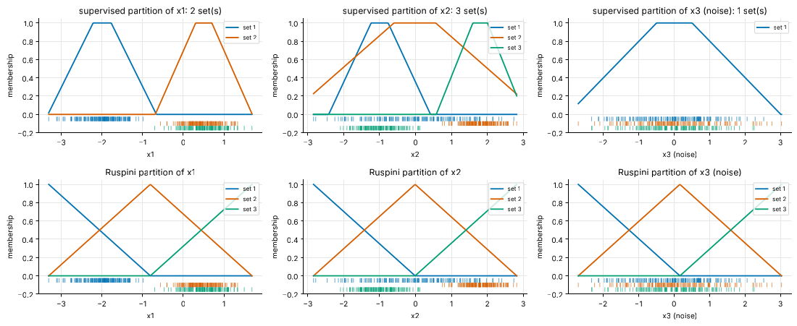
Open in ColabExample plot_06_fuzzy_partition_tree.py in the gallery
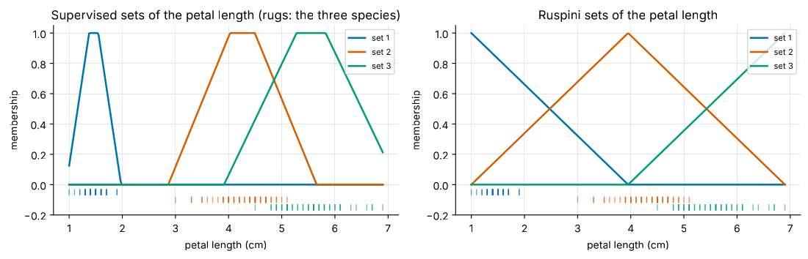
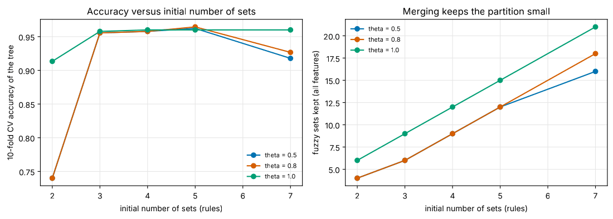
8.4.7 Hinging-hyperplane tree on a piecewise-linear surface
Figure 8.29 shows the elementary step on one input: FCRM with two models fits the two lines of , their crossing at (true ) is the hinge, and the memberships are the fuzzy version of the split; the condition of the node is . On the two-input surface with two crossing creases (fig. 8.30) the root hinge of a depth-two tree splits the plane close to the main crease, the child hinges model the remaining kinks, and one child is split again; the root reports and the deepest node , where the remaining error sits. The parameter study (fig. 8.31) shows the test RMSE falling from (one hinge) to with seven leaves, steeply for the first splits and slowly afterwards, because every hinge is fitted to data that are only approximately piecewise planar. On this surface greedy growth gives practically the same error as balanced growth for every number of leaves, a large min_samples_leaf stops the growth at four leaves, and linear leaves need more splits than hinge leaves (a depth-two tree with three planes has an RMSE of ).
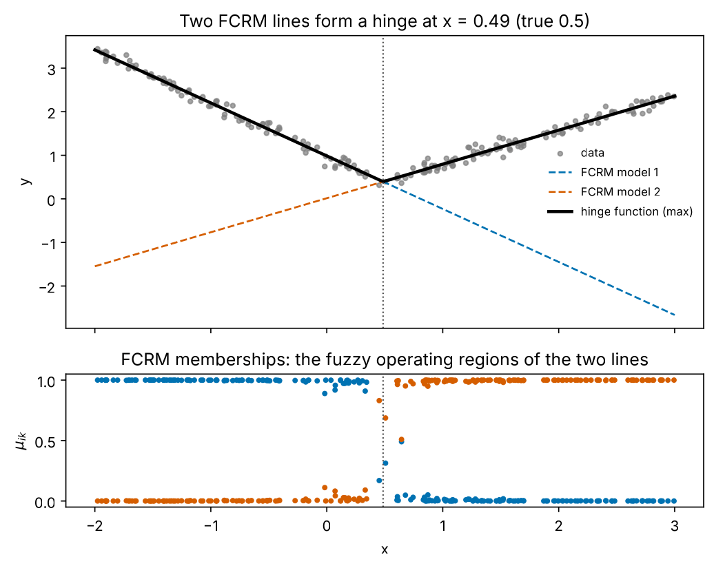
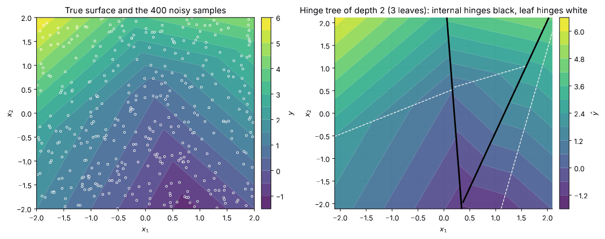
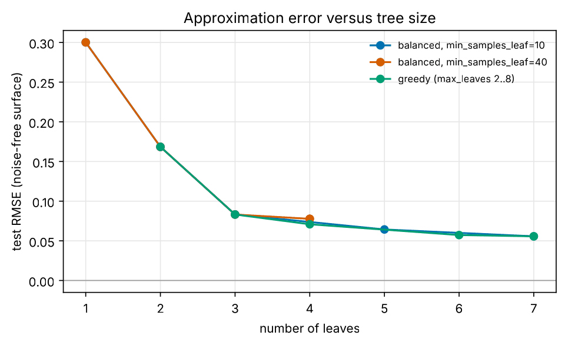
8.5 Further reading
The Takagi–Sugeno model was introduced in [94]; Babuška’s book [7] and the chapter [95] are the standard references for product-space clustering, projection of clusters and the local versus global estimation of consequents, whose interpretation is analyzed in [102, 106]. The probabilistic interpretation of Gath–Geva clustering [21] as a Gaussian mixture of regressors connects it to cluster-weighted modeling [101]; the transformed input-domain approach [103] is the exact but opaque alternative to projection, and the modified Gath–Geva algorithm [96] the transparent one, extended to MIMO systems in [104, 105]. Gustafson–Kessel clustering was introduced in [18] and fuzzy c-regression models in [97]; the c-means functional with its convergence theory is Bezdek’s [3]. The supervised fuzzy classifier and its feature selection are in [98], and the supervised partitions for decision trees in [99], which builds on the similarity-based rule-base simplification of [42], the fuzzy decision trees of Janikow [108], ID3 [107], CART [111] and the comparison of discretization methods in [109]. Hinging hyperplanes are Breiman’s [110]; their identification by constrained fuzzy c-regression, the tree construction and its use in predictive control are described in [100].